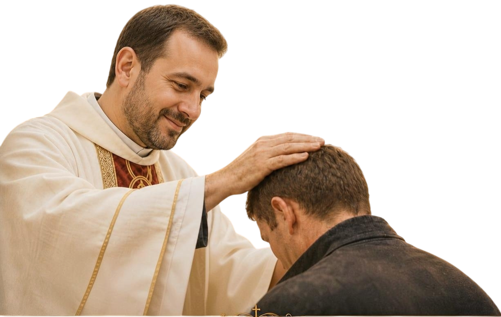

Campaña del Santo Rosario
Virgen Peregrina de Schoenstatt
Virgen Peregrina de Schoenstatt
¿Querés ser misionero?
¡Te esperamos!

"Descubrí espacios de paz, encuentro y espiritualidad."
Un espacio espiritual con vistas espectaculares y actividades para el alma.
arrow_forward Conocé másUn lugar para reflexionar y renovar el espíritu.
arrow_forward Conocé más¿Listo para una pausa que renueva el alma?
Elegí tu casa de retiro y reservá tu lugar.


🏅 En pos de la transparencia, podés consultar la grilla completa con todos los números vendidos y verificar cómo quedó registrada la venta de las rifas.
Ver grilla de la ventaUn momento de gracia cada semana
Cada jueves del año, de 08:00 a 18:00 hs, te invitamos a hacer una pausa, entrar en silencio y encontrarte con Jesús presente en la Eucaristía. Podés anotarte para una franja horaria y acompañarnos en esta misión.
| Horario | Adoradores Jueves de Junio | |
|---|---|---|
| 8:00 – 9:00 | Ana | Martina |
| 9:00 – 10:00 | María José Arauz | — |
| 10:00 – 11:00 | Roberto S | — |
| 11:00 – 12:00 | Karla Xeijas | — |
| 11:15 – 12:00 | — | María José |
| 12:00 – 13:00 | Emilse | — |
| 13:00 – 14:00 | Noelia | — |
| 14:00 – 15:00 | Baldo | — |
| 15:00 – 16:00 | Daniela S. | — |
| 16:00 – 17:00 | Diana, Celestino | Gisela |
| 17:00 – 18:00 | Tato | Glady |
| 17:30 – 18:00 | — | Hernán |

Parroquia San Luis Gonzaga · Villa Elisa

Para orar por enfermos y afligidos

Vengan a mí todos los que están cansados y agobiados, y yo los aliviaré.
— Mateo 11, 28
Desde hace más de un siglo, las campanas de San Luis Gonzaga acompañan la vida de Villa Elisa, convocando a la oración, al encuentro y a la esperanza. Entre sus muros se conserva la memoria de generaciones enteras que encontraron aquí un lugar donde la fe hizo comunidad.
La historia de nuestra parroquia está marcada por la fe, el esfuerzo y la dedicación de generaciones que han dejado su huella en cada rincón. Desde sus primeros pasos, en los que la comunidad se unió para construir un lugar de oración y encuentro, hasta el fortalecimiento de su identidad a través de los años, nuestra parroquia ha sido testigo de momentos de gran trascendencia. En paralelo, la presencia de los Capuchinos Franciscanos en Villa Elisa ha sido fundamental para el crecimiento espiritual de la comunidad. Su legado, profundamente arraigado en la región, sigue vivo en las celebraciones y en la vida diaria de quienes participan de su misión.
Más que un edificio, San Luis Gonzaga es una historia viva de fe y comunidad.
Esta historia compartida refleja cómo la fe y la comunidad se entrelazan, creando un camino de esperanza, servicio y devoción.


Iglesia San Luis Gonzaga

Ayuda y asistencia a los más necesitados
Atención los martes desde las 16hs por calle 52 y 9.


· 2026 ·
¡Volvimos!
Tierra Santa con el grupo scout (USCA)
Sábados a las 15hs

Formación continua para adultos.


"La Parroquia educando para la fe, el servicio y el futuro."

Nuestro colegio busca integrar el aprendizaje académico y los valores cristianos, fomentando una formación integral para niños y jóvenes. Te invitamos a conocer más sobre nuestras actividades y programas.